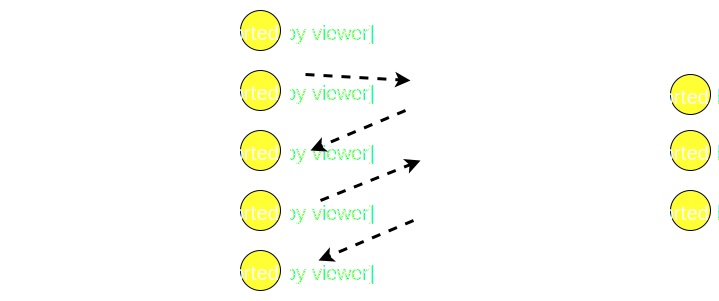

@Mikhail.Angelov

Ѣ
Генераторы в
JavaScript

2010: SpiderMonkey
2013: V8
2015: ES 2015
Пример ассинхронной функции
function createUser(req, res){
checkParams(req.body, (err, result)=>{
if(err){
res.status(400).send(err)
}else{
createUser(req.body, (err, user)=>{
if(err){
res.status(400).send(err)
}else if(user.isNew){
sendWelсomeMail(user, (err)=>{
res.json(user)
})
}else{
res.json(user)
}
})
}
})
}
function createUser(req, res){
checkParams(req.body)
.then(()=>createUser(req.body))
.then(user=>{
if(user.isNew){
return sendWelсomeMail(user)
.then(()=>res.json(user))
})
}else{
res.json(user)
}
})
.catch(err=>res.status(400).send(err))
}
function createUser(req, res){
co(function*(){
yield checkParams(req.body)
const user = yield createUser(req.body)
if(user.isNew){
yield sendWelсomeMail(user)
}
res.json(user)
}).catch(err=>res.status(400).send(err))
}
async function createUser(req, res){
await checkParams(req.body)
const user = await createUser(req.body)
if(user.isNew){
await sendWelсomeMail(user)
}
res.json(user)
}
createUser(req, res).catch(err=>res.status(400).send(err))
Генераторы это особый тип функций которые позволяют выйти и войти в них в определенной точке исполнения обозначенной ключевым словом yield при этом сохраняется контекст исполнения этой функции
Диаграмма последовательности
Нет никакой синхронности в JS
Обработка ошибок
Где это работает
- Chrome 39+
- Firefox 27+
- Edge 13+
- Opera 26+
- Safari 10+
- Node.js 4+
- IE -
Логическое продолжение работы с ассинхронными методами
async/await
Поддержка async/await
- Chrome 55+
- Firefox 52+
- Edge 15+
- Opera 42+
- Safari 10.1+
- Node.js 7+
- IE -
Алтернативные шаблоны проектирования на генераторах
asynquence
js-csp
Спасибо за внимание!